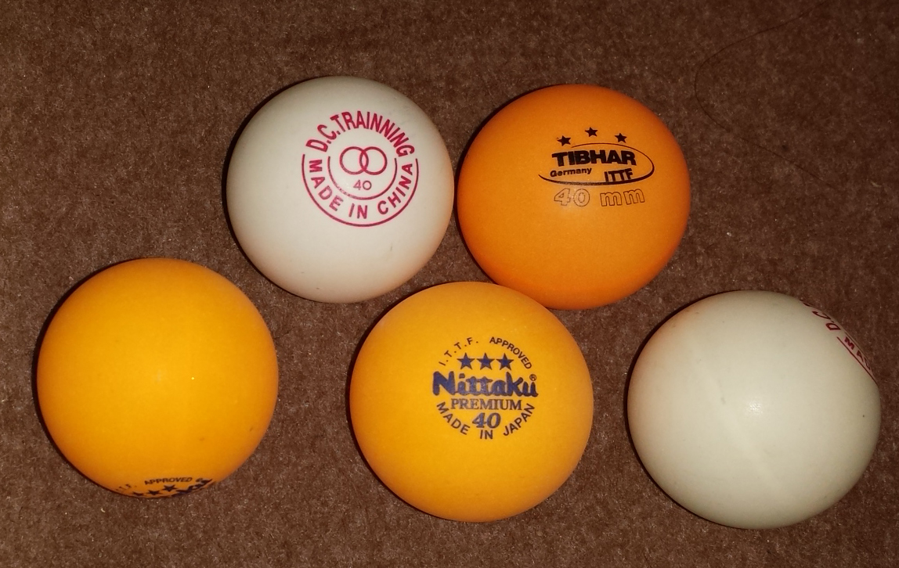
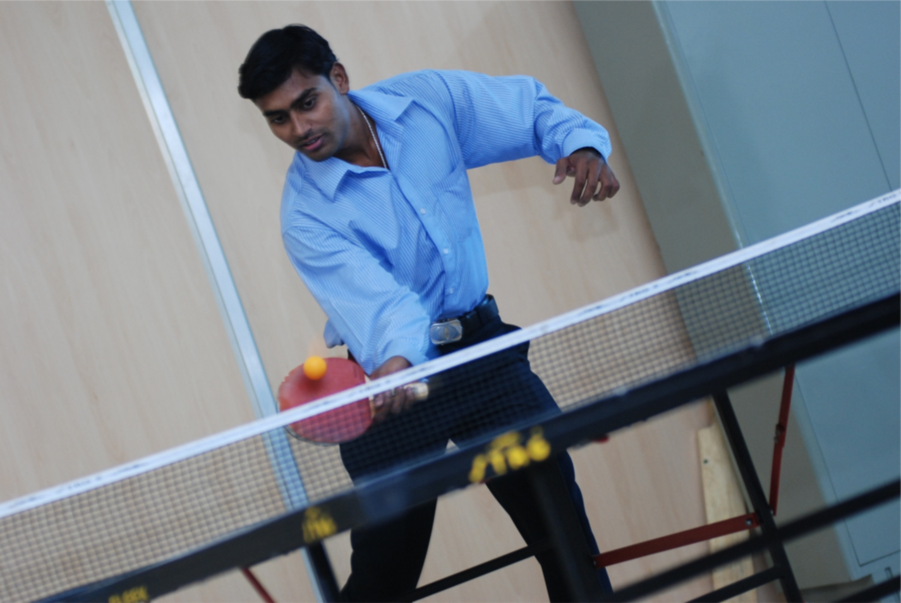
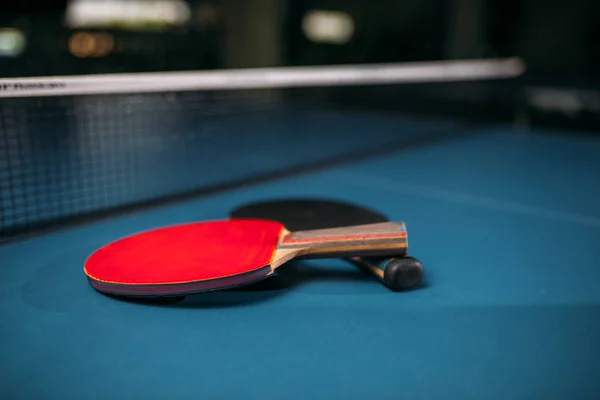

⬆
Настільний теніс — олімпійський вид спорту, у якому використовують спеціальні ракетки та ігровий стіл, розмежований сіткою навпіл. Гра може проходити між двома суперниками або двома парами суперників. Завданням гравців є утримання м'яча в грі за допомогою ракеток — кожен гравець після одного відскоку м'яча на своїй половині столу повинен відправити м'яч на половину столу суперника. Очко нараховується гравцеві, коли суперник не може повернути м'яч відповідно до правил. За сучасними міжнародними правилами, кожна партія триває до 11 очок. Матч складається з непарної кількості партій, і грається на більшість перемог у партіях.
Тенісний стіл
М'ячі для настільного тенісу
Сітка для настільного тенісу
Ракетки для настільного тенісу
Більшість фахівців вважає, що настільний теніс з'явився в Англії, як різновид великого тенісу.
Можливо, що настільний теніс виник у США, Індії або Південній Африці (передбачається, що в останніх двох країнах у настільний теніс почали грати відряджені туди британські офіцери).
Незабаром гра з відкритого повітря перейшла в приміщення — грали на підлозі. Пізніше з'явилася гра на столах. Простий інвентар, а головне невеликі розміри майданчика дозволяли грати де завгодно.
Тоді не було визначених правил. М'ячі робилися з ниток, книги, розставлені на столі, були сіткою, а шматки товстого картону були ракетками. Досить довго гра використовувалася не як вид спорту, а тільки як засіб для проведення вільного часу й активного відпочинку.
Наприкінці вісімдесятих років XIX століття гра стала популярною багато в чому через конкуренцію серед виробників інвентарю, яка сприяла вдосконалюванню ракеток і м'ячів. Основним їхнім виробником була американська фабрика братів Паркер, штат Массачусетс. Ця фабрика робила й експортувала до Англії все для гри в «Теніс для приміщень». Однак і англійські компанії, такі як Ayres Ltd. (вони рекламували цей вид спорту як «Мініатюрна гра в лауніверситетеніс у приміщеннях»), отримали власні патенти.
М'ячі виготовляли з гуми або корку, їх часто зашивали в тканину. Ракетки не були стандартизовані. Безсумнівно, головним удосконаленням став порожнистий м'яч. Ось одна з версій його виникнення:
1900 року гравець на ім'я Джеймс Ґібб в Америці натрапив на маленькі порожнисті кольорові кульки — дитячі іграшки. Після повернення до Англії він спробував подібну порожнисту кульку на столі і виявив, що вона має величезну перевагу над цілісною.
Поступово стала змінюватися форма ракетки. З'явилися фанерні ракетки, їхня вага зменшилась майже втроє. Стали застосовуватись і нові матеріали для обклеювання ігрової поверхні: пергамент, шкіра, велюр та ін. Змінювались і правила гри.
В Англії пінг-понг як спорт визнали ще на початку 1900 року, коли було проведено перше офіційне змагання. З Англії гра прийшла в Австро-Угорщину, потім у Німеччину.
1901 року офіційний турнір відбувся в Індії. Його можна вважати першим міжнародним змаганням. Переміг один із найкращих гравців того часу індійський спортсмен Нандо. Назву «пінг-понг» було зареєстровано у 1901 році Джоном Джаквесом і продано братам Паркер. Назву утворено зі сполучення двох звуків: Пінг — звук м'яча, коли він ударяється в ракетку, і Понг — коли м'яч відскакує від столу.
Особливо помітний поштовх розвитку настільного тенісу дала поява пористої, губчатої гуми (губки), яку стали застосовувати як накладку на ракетку. 1902 року Е. К. Гуд обклеїв свою ракетку гумою, що дозволило йому закручувати м'яч.
З 1904 до 1921 року популярність настільного тенісу в Європі й Америці знижується, багато в чому через монополію братів Паркер і Джона Джаквеса на інвентар і правила гри.
1926 року засновано Міжнародну Федерацію Настільного Тенісу (ITTF).
З появою губки (1930 р.) гра стала різноманітнішою, бо завдяки щільному зчепленню ракетки з м'ячем стало можливим додавати йому сильні обертання. Змінилася траєкторія польоту м'яча, відкрилася можливість грати активно і тоді, коли він вже опускався нижче сітки. Спортсмени, що грають у захисному стилі, тепер повинні були далеко відходити від столу і швидко повертатися до нього. Гра ставала динамічнішою. Інтерес глядачів до змагань значно зріс, змагання на першість світу в Лондоні 1935 року щодня спостерігали до 10 тисяч чоловік. 1936 року конгрес ITTF ухвалив рішення про зміну назву гри. Замість старої назви пінг-понг з'явився настільний теніс.
Головною зміною в правилах гри можна вважати зниження висоти сітки (від 17 до 15,25 сантиметрів), а також встановлення визначеної висоти ігрової поверхні столу — 76 сантиметрів від підлоги. Було також заборонено під час подачі підкручувати м'яч пальцями.
З 1930 до 1951 року серед переможців змагань переважають представники Угорщини. З 1951 року найкращі результати показують представники Азійських країн (Японія, Корея, Китай).
З 1952 року, з першості світу в Бомбеї, почалася нова епоха настільного тенісу, пов'язана з виходом на міжнародну арену японських спортсменів. Японці ввели не тільки новий вид покриття ракетки але й своєрідний хват. Система ведення гри виявилась незвичайною, вони виконували один основний елемент техніки — накат праворуч, який було доведено до віртуозної точності. Інший елемент — відмінне володіння подачами. Безпосередньо на подачах японські гравці в кожній партії вигравали від 4 до 10 очок. Японських гравців відрізняла висока фізична підготовленість, що дозволяла стрімко переміщуватись, миттєво завдавати удари. У Бомбеї чемпіоном світу серед чоловіків став Сато. Чоловічі парні змагання виграли Фудзі і Хаясі. У жіночих парних змаганнях — Нарахара і Нісімура.
З 1954 до 1957 року гідний опір японським тенісистам робили тільки представники жіночої команди Румунії. Стиль європейських спортсменів став змінюватись. Щоправда, більшість гравців ще дотримувалась захисної манери, але гра стає все енергійнішою, винахідливішою.
В ITTF зареєстровано близько 130 країн. Чемпіонати світу з настільного тенісу почали проводитись щороку починаючи з 1926 (за винятком 1940—1946 років), а з 1957 року — раз у два роки. Чемпіонати Європи проводяться з 1958. 1988 року настільний теніс стає Олімпійським видом спорту (Сеул, Південна Корея). Сьогодні більш ніж 40 мільйонів гравців щорічно беруть участь в офіційних турнірах в усьому світі.